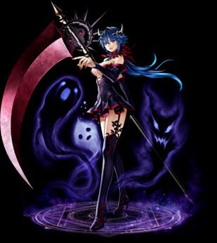

| ソウルコントローラー |
|  |
| 魂の楔 |
|
<情報>
<持続時間>
- 常に「アセンブル」状態になる
<説明>
- 散らばっている魂を拘束して常にアセンブル状態を維持する。 |
<スキルタイプ>
専用パッシブスキル |
<前提スキル>
- なし |
<パワーアップ形態>
- なし |
| ソウルカタストロフィ |
|
<情報>
- スキル難易度 5
- 必要CP 120
- 消費CP [n]
<説明>
- 魂を崩壊させて発生したエネルギーを吸収し、攻撃速度及び移動速度を増加させる。また、すべてのスキルを消費CP無しで使用可能になる。「アセンブル」状態でのみ使用可能。解放効果状態で使うと再使用時間が短縮される。 |
<スキルタイプ>
専用強化スキル |
<前提スキル>
- 魂の暴走 Lv50 |
<パワーアップ形態>
- 速度増加率, 持続時間, ペナルティー減少 |
| スキルLv |
1（+0） |
1（+1） |
1（+2） |
1（+3） |
1（+4） |
1（+5） |
| 消費CP |
175 |
177.5 |
180 |
182.5 |
185 |
187.5 |
| 持続時間（秒） |
30 |
30.5 |
31 |
31.5 |
32 |
32.5 |
| 攻撃速度上昇（％） |
17.5 |
17.75 |
18 |
18.25 |
18.5 |
18.75 |
| 移動速度上昇（％） |
55 |
56 |
57 |
58 |
59 |
60 |
| クールタイム（秒） |
60 |
| 短縮クールタイム（秒） |
40 |
| フルリバレイト |
|
<情報>
- スキル難易度 2
- 必要CP 15
- 消費CP [n]
- 獲得CP [n]
<説明>
- 束縛された魂を解放し、従来よりも長時間、すべての能力を上昇させる。 |
<スキルタイプ>
強化スキル |
<前提スキル>
- リバレイト Lv50 |
<パワーアップ形態>
- 持続時間, 能力値増加率 |
| スキルLv |
1（+0） |
1（+1） |
1（+2） |
1（+3） |
1（+4） |
1（+5） |
| 消費CP |
160 |
163 |
166 |
169 |
172 |
175 |
| 獲得CP |
51 |
52 |
53 |
54 |
55 |
56 |
| 力 |
135 |
137.5 |
140 |
142.5 |
145 |
147.5 |
| 敏捷 |
135 |
137.5 |
140 |
142.5 |
145 |
147.5 |
| 健康 |
135 |
137.5 |
140 |
142.5 |
145 |
147.5 |
| 知識 |
135 |
137.5 |
140 |
142.5 |
145 |
147.5 |
| 知恵 |
135 |
137.5 |
140 |
142.5 |
145 |
147.5 |
| カリスマ |
135 |
137.5 |
140 |
142.5 |
145 |
147.5 |
| 運 |
135 |
137.5 |
140 |
142.5 |
145 |
147.5 |
| 持続時間（秒） |
90 |
91 |
92 |
93 |
94 |
95 |
| 稲妻乱切り |
|
<情報>
- スキル難易度 4
- 必要CP 60
- 消費CP [n]
- 獲得CP [n]
- 敵の攻撃無視
<攻撃関連>
- ◆ 物理ダメージ [n]~[n]x[8~12]
- 攻撃速度 武器速度x400％
<説明>
- 鎌で敵をより強く無差別に斬りつけ攻撃する。従来よりダメージ増加。ターゲットを攻撃している間は移動可能。 |
<スキルタイプ>
強化スキル |
<前提スキル>
- 乱斬り Lv50 |
<パワーアップ形態>
- 威力, 攻撃回数 |
| スキルLv |
1（+0） |
1（+1） |
1（+2） |
1（+3） |
1（+4） |
1（+5） |
| 消費CP |
205 |
208.5 |
212 |
215.5 |
219 |
222.5 |
| 獲得CP |
160 |
163 |
166 |
169 |
172 |
175 |
| 物理ダメージ（％） |
75 |
77.5 |
80 |
82.5 |
85 |
87.5 |
| 連打回数 |
8 |
8.1 |
8.2 |
8.3 |
8.4 |
8.5 |